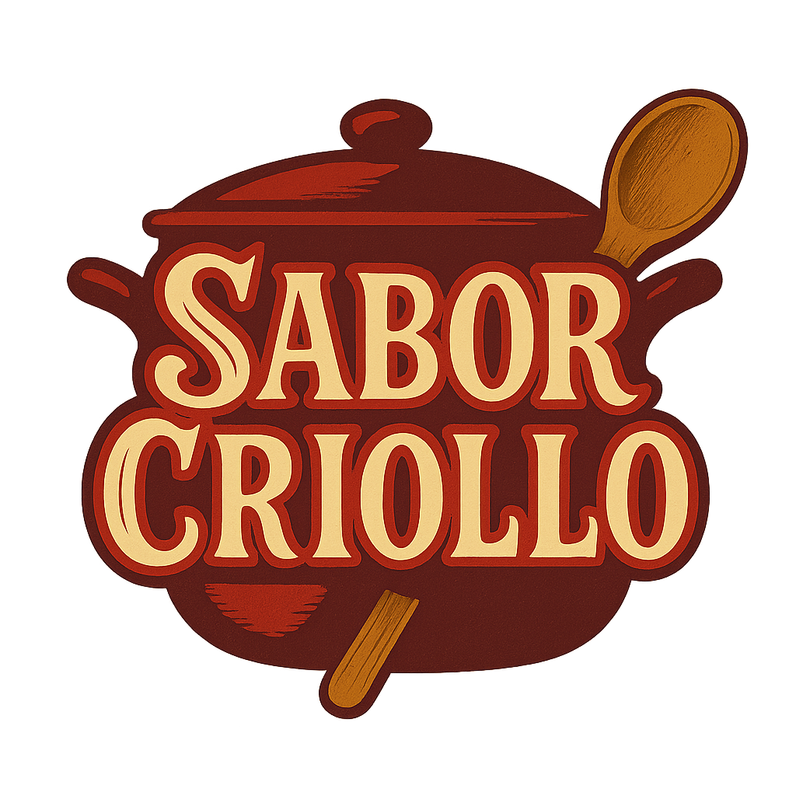
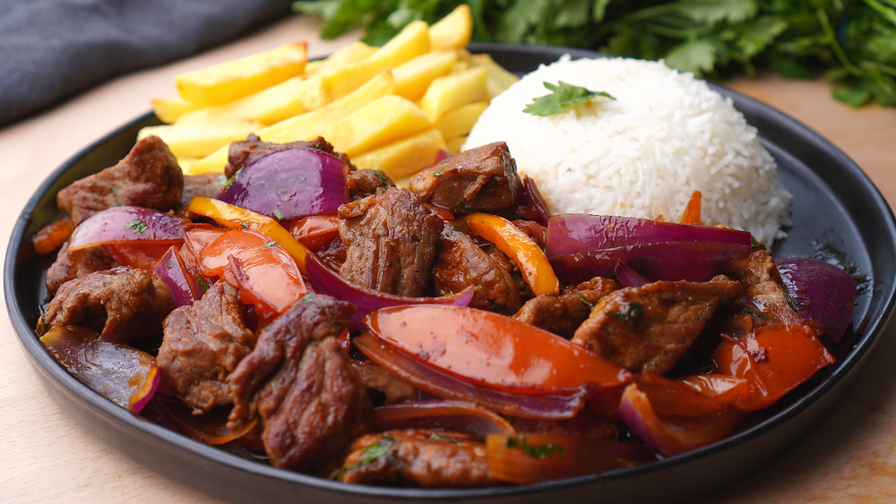
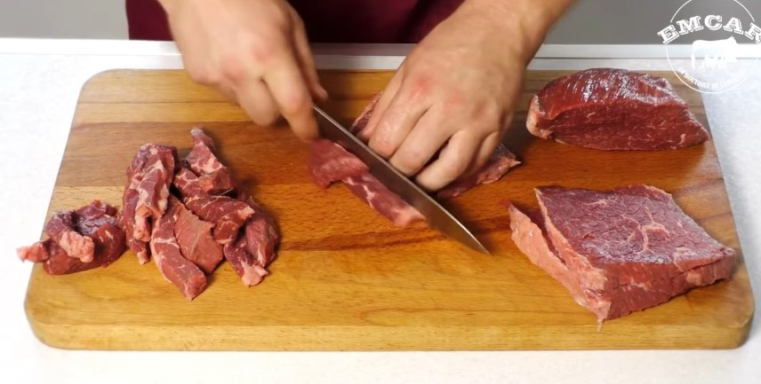
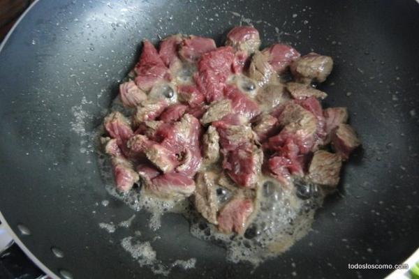
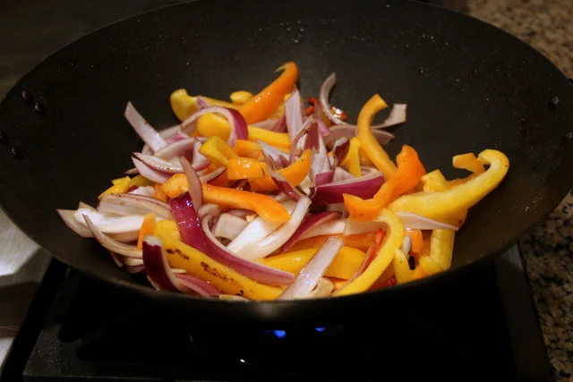
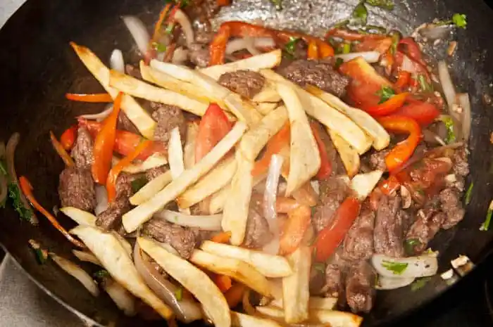

Sabores peruanos que conquistan el corazón

El lomo saltado es uno de los platos más representativos de la gastronomía peruana, mezcla de la cocina criolla con influencias orientales. Carne jugosa, verduras frescas y papas fritas crean un sabor único e irresistible.




Aprende a preparar el delicioso lomo saltado con este video rápido y claro.